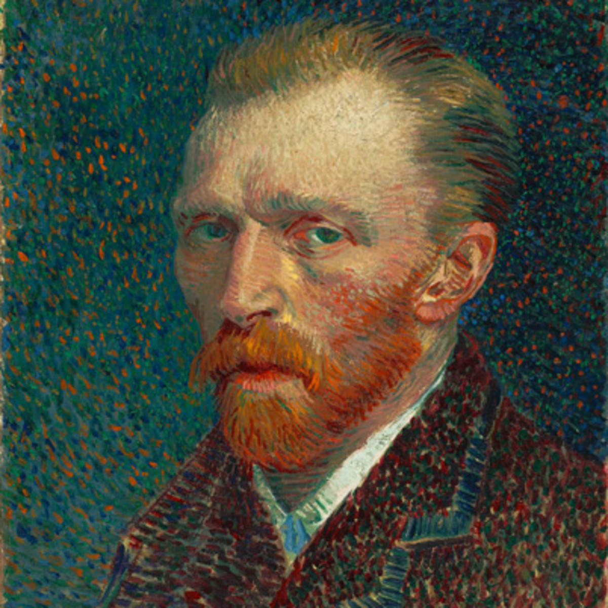

×
Starry night By Van Gogh

Painted in 1889 during his stay at asylum, is now known as the most recgozined art, for its stunning beauty. Simply a magnificent piece of art.
×
Van Gogh's health

Van Gogh sufferd from temporal lobe epilepsy.